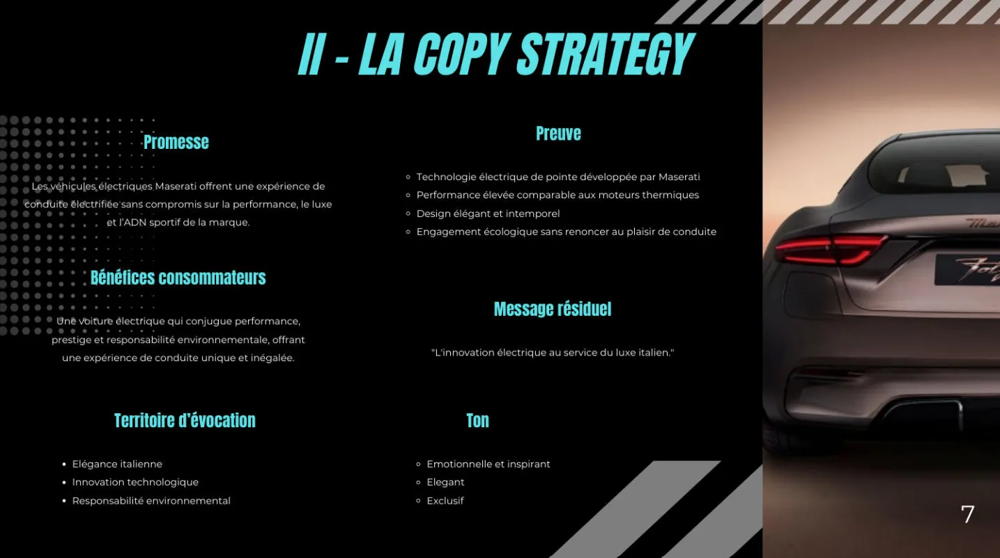
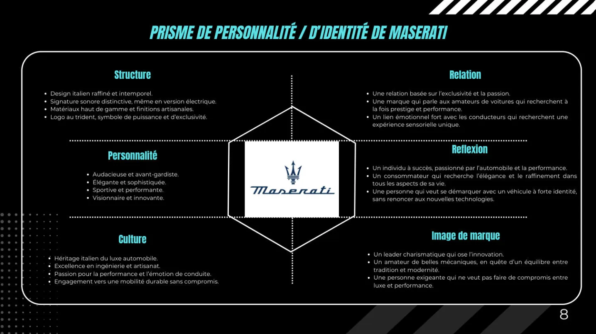
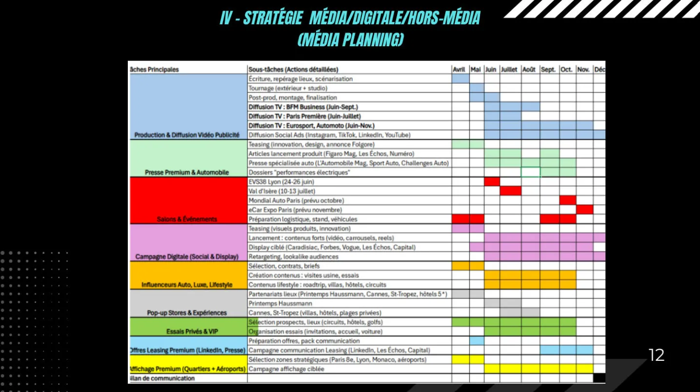

Tim Agoune
Tim Agoune01Objectif
Concevoir une campagne de communication à 360° : définir le message d'une marque et le décliner de manière cohérente sur l'ensemble des canaux — création, médias, événements.
02Démarche
Nous avons produit un dossier de campagne complet, du brief au budget, présenté et soutenu en groupe. J'en retiens l'importance de la copy strategy : une campagne efficace porte un seul message, et tout le dispositif doit servir ce message.
Notre projet portait sur Maserati : la marque reste peu présente en France, et le passage du luxe à l'électrique est une occasion à saisir. Notre campagne visait donc à installer la gamme électrique, avec du media planning et de la planification budgétaire.



03Moyens et outils
- SWOT pour l'analyse de la marque et de son marché ;
- prisme de Kapferer pour définir l'identité de marque ;
- copy strategy pour cadrer le message de la campagne ;
- storyboard pour le film publicitaire ;
- media planning et budget prévisionnel de la campagne.